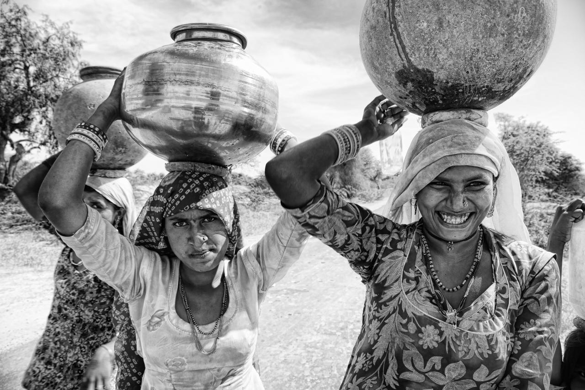
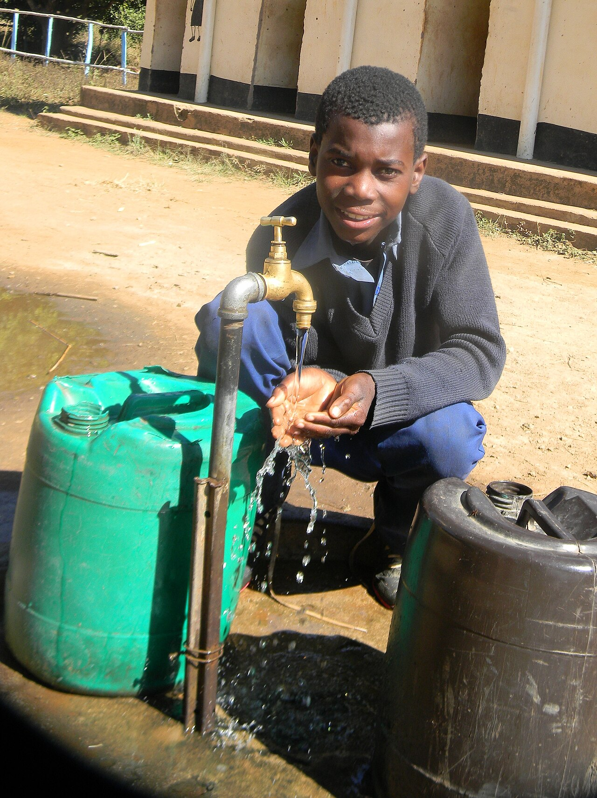

Waste at home
People who do have taps often waste water: long showers, taps left running, leaking pipes. Every litre wasted puts more pressure on rivers and groundwater that everyone shares.
How much do I use?Some people walk to a pump for every bucket of water. Others waste it without noticing.
people do not have safely managed drinking water
people do not have safely managed toilets
people cannot wash their hands with soap and water at home
people still have no toilet at all

Where there is no tap at home, someone has to collect water from a well, pump or river. This job usually falls on women and girls. Time spent carrying water is time taken away from school, work and rest.
Water from unsafe sources can carry diseases like cholera and diarrhoea.

In 2023, 447 million children had no basic drinking water at school, and 427 million had no basic toilets there.
Without water and clean toilets, children fall sick more often and some girls miss school, especially during their periods.
People who do have taps often waste water: long showers, taps left running, leaking pipes. Every litre wasted puts more pressure on rivers and groundwater that everyone shares.
How much do I use?